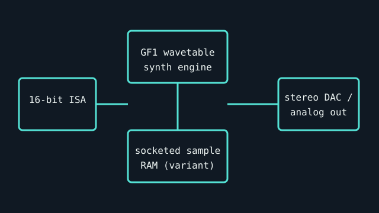

[ INDIVIDUAL COMPONENT // SOUND HARDWARE ]
Gravis UltraSound Classic (GUS 1000)
The original Gravis UltraSound ISA card is notable for sample-RAM wavetable playback. This record covers the Classic GUS 1000, not later MAX, ACE, or clone boards.

Specifications
| Product ID | Gravis UltraSound Classic, model GUS 1000; confirm the board label and PCB revision. |
|---|---|
| Bus | 16-bit ISA; legacy DOS systems commonly configure I/O base, IRQ, and DMA in software or jumpers depending on revision. |
| Connectors / I/O | Line-level stereo output, line input, microphone input, and joystick/MIDI game port; exact bracket and header layout must be inspected. |
| Conversion / engine | GF1 wavetable synthesizer with onboard sample RAM; 16-bit stereo playback and 8-bit recording are the common Classic configuration. RAM quantity and populated sockets vary by card. |
| Drivers / OS | Gravis supplied DOS and Windows 3.x-era software; do not infer modern Windows support. Preserve the driver disk matching the board/revision. Legacy ISA has no native support in modern PCIe-only systems. |
| Variant compatibility | Classic GUS differs from MAX/ACE and later revisions in audio circuitry, memory, and I/O. Games that assume Sound Blaster compatibility may require a separate compatible card or a game-specific driver. |
Service & preservation
Before power-up, document every socketed memory IC, jumper, and board marking; inspect electrolytics, ISA contacts, and the external audio-level control. Save the matching Gravis setup utilities and note RAM size and IRQ/DMA assignment. Never insert or remove an ISA card while powered.
Primary sources
- Internet Archive catalog — scans of original Gravis UltraSound manualsArchival access to manufacturer-authored setup and software documentation; compare board model and revision.
- Internet Archive catalog — original Gravis driver disks and utilitiesPreserved manufacturer software and setup material; verify version and board revision before installing.